WITS UNIVERSITY • GEMP1 INTEGRATED END-OF-YEAR ASSESSMENT
PAPER 2
Complete Rapid Revision
RENAL • GASTROINTESTINAL • MUSCULOSKELETAL • CANCER & HAEMATOLOGY
EXAM-READY EDITION | 42 condition sections
|
|---|
Prepared from the user-provided official Integrated EYA Student Information Guide and official red-coded Core Presentations List, together with the uploaded 2026 student study guide and renal, GIT, MSK, cancer and haematology notes. The official documents define the format/scope; student notes are supporting revision material. Original university lecture slides were not individually verified.
How to use this the night before
• Read the stem → explain WHY → cover the buzzwords and test recall.
• Prioritise shock, bleeding, renal failure, sepsis, obstruction and spinal/neurological emergencies.
• Learn first-line drug CLASSES and their mechanisms; the official assessment says exact doses are not expected.
• Use the Word Navigation pane: every condition is a searchable heading.
What the official integrated exam tests
Two papers of 120 one-mark questions, 180 minutes each, arranged in patient-based clusters. A typical cluster contains approximately five four-option SBAs, a data/results interpretation question and one or two 1–3-word VSAQs. Questions progress from recognising the problem to explaining mechanisms, interpreting data, identifying danger and choosing a safe supervised next action. Source: Integrated EYA Student Information Guide, pp.1–4.
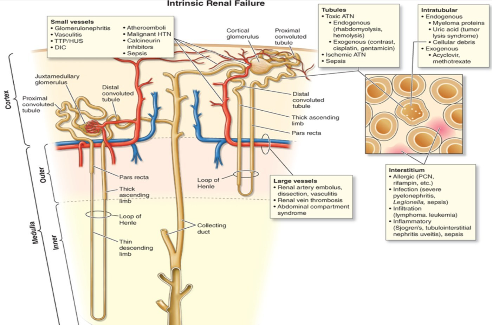
FIGURE | Nephron and glomerular circulation: a visual renal physiology primer (source: study guide, p.125).
PAPER 2 | Core-condition map
All 42 conditions below are marked RED in the official GEMP1 Core Conditions List (pp.5–7). They are organised according to the uploaded 2026 study guide. Red conditions define assessable scope, not a prediction of which cases will be asked.
PART I — RENAL • 5 CONDITIONS
Acute Kidney Injury (AKI) | Chronic Kidney Disease (CKD)
Nephritic Syndrome | Nephrotic Syndrome
Renal Calculi (Urolithiasis)
PART II — GASTROINTESTINAL • 18 CONDITIONS
Severe Acute Malnutrition (SAM) | Acute Gastroenteritis
Diarrhoea — Clinical Approach | Food Poisoning
Shigellosis (Bacillary Dysentery) | Giardiasis
Constipation | Irritable Bowel Syndrome (IBS)
Gastro-Oesophageal Reflux Disease (GORD) | Peptic Ulcer Disease (PUD)
Upper Gastrointestinal Bleed (UGIB) | Ulcerative Colitis (UC)
Colorectal Cancer (CRC) | Gallstones and Biliary Colic
Acute Cholecystitis | Acute Pancreatitis
Liver Cirrhosis | Ascites
PART III — MUSCULOSKELETAL • 10 CONDITIONS
Closed Long-Bone Fractures | Anterior Cruciate Ligament (ACL) Injury
Spinal Cord Injury | Osteoporosis
Vitamin D Deficiency (Rickets/Osteomalacia) | Osteoarthritis (OA)
Rheumatoid Arthritis (RA) | Gout
Septic Arthritis | Bone Tumour — Osteosarcoma
PART IV — CANCER & HAEMATOLOGY • 9 CONDITIONS
Breast Cancer | Cervical Cancer
Prostate Cancer | Iron-Deficiency Anaemia
Thalassaemia | Aplastic Anaemia
Haemophilia | von Willebrand Disease (vWD)
Disseminated Intravascular Coagulation (DIC)
Focus rules
PATIENT SAFETY COMES FIRST
|
|---|
DATA INTERPRETATION | Fast reference
This reference page complements, rather than replaces, the detailed condition sections. Normal ranges are approximate and should be read against the laboratory’s own reference intervals.
Renal and electrolyte patterns
| Test / pattern | Immediate interpretation |
|---|---|
| Creatinine ↑ rapidly / oliguria | AKI: check potassium, volume state, drugs and obstruction |
| Potassium high + peaked T waves | Potentially fatal cardiac instability; urgent protocol |
| Blood + RBC casts | Inflammatory glomerular bleeding / nephritic pattern |
| 4+ protein + hypoalbuminaemia | Nephrotic pattern; quantify urinary protein |
| Muddy-brown granular casts | Acute tubular injury |
| Urine ACR persistent ≥3 mg/mmol | Abnormal albuminuria, assess CKD risk |
| Bicarbonate low + pH low | Metabolic acidosis; calculate anion gap if required |
Anion gap ≈ Na⁺ − (Cl⁻ + HCO₃⁻). A typical reference range is about 8–12 mmol/L without potassium, but laboratories vary. High-gap acidosis: lactate, ketoacids, renal failure and selected toxins; normal-gap acidosis: diarrhoea or renal tubular acidosis.
Urinalysis: quick differential
| Urine finding | Think |
|---|---|
| Nitrite + leukocyte esterase | Bacterial UTI (nitrite not always present) |
| Blood ± flank-to-groin pain | Stone / urinary tract injury |
| RBC casts | Glomerulonephritis |
| Heavy protein, lipid casts | Nephrotic syndrome |
| White-cell casts | Pyelonephritis/interstitial nephritis in context |
GI physiology and liver test patterns
| Pattern | Meaning / likely causes |
|---|---|
| ALT/AST predominant elevation | Hepatocellular injury (viral hepatitis, drugs, ischaemia etc.) |
| ALP + GGT + direct bilirubin ↑ | Cholestasis/biliary obstruction |
| Albumin ↓ + INR ↑ | Reduced hepatic synthetic function (interpret other causes too) |
| SAAG ≥11 g/L | Ascites from portal-hypertension physiology |
| Ascitic PMN ≥250 cells/µL | Spontaneous bacterial peritonitis until assessed |
| Lipase ≥3× ULN + typical pain | Supports acute pancreatitis |
| Microcytic anaemia + low ferritin | Iron deficiency, investigate source |
Inflammation and coagulation patterns
| Pattern | Think |
|---|---|
| PT and aPTT ↑; platelets + fibrinogen ↓; D-dimer ↑ | DIC |
| Isolated aPTT ↑ + haemarthrosis | Haemophilia (factor VIII/IX deficiency) |
| Mucocutaneous bleeding ± normal aPTT | von Willebrand disease or platelet disorder |
| Pancytopenia + low reticulocytes | Marrow failure (e.g. aplastic anaemia) |
| Marked microcytosis + normal iron stores | Thalassaemia trait |
PART I — RENAL
5 examinable conditions
Every following condition follows: clinical stem → why it happens → discriminate → tests → safest steps → exam pearls. The section labels are organisational and do not imply marks weighting.
Acute Kidney Injury (AKI)
RENAL | CONDITION 1 OF 5 | STUDY GUIDE p.124
| CLINICAL STEM A patient with vomiting and diarrhoea taking an ACE inhibitor and ibuprofen develops oliguria, creatinine elevation and potassium 6.8 mmol/L. |
|---|
MECHANISM | WHY THE CLINICAL FEATURES OCCUR
Abrupt reduction in glomerular filtration. Pre-renal hypoperfusion causes reduced filtration; sustained ischaemia/nephrotoxins can injure tubules (acute tubular injury/necrosis); obstruction elevates tubular pressure and reduces filtration. Prostaglandins preserve afferent arteriolar flow, while angiotensin II constricts the efferent arteriole: NSAIDs + ACE inhibitor/ARB + diuretic can precipitate AKI ("triple whammy"). Reduced K+ and acid excretion causes hyperkalaemia and acidosis.
RECOGNISE & DISCRIMINATE
|
INVESTIGATIONS & RESULTS
|
|---|
SAFE INITIAL ACTIONS | DRUGS AND THERAPY
• ABCDE and senior review if unstable; correct volume depletion cautiously, stop nephrotoxins, investigate source and relieve obstruction when present.
• Hyperkalaemia with ECG changes requires immediate cardiac membrane stabilisation with IV calcium under emergency protocol, then therapies to move/remove K+.
• Remember dialysis indications: refractory Acidosis, Electrolytes (K+), Intoxications (select), Overload, Uraemic complications (AEIOU).
EXAM PEARLS & BUZZWORDS
|
|---|
VSAQ PROMPT What urinary cast strongly suggests acute tubular injury? Answer: Granular cast
EXAM TRAP Serum creatinine may lag behind the initial insult; normal urine output does not fully exclude AKI.
Chronic Kidney Disease (CKD)
RENAL | CONDITION 2 OF 5 | STUDY GUIDE p.128
| CLINICAL STEM A patient with diabetes and longstanding hypertension has persistent albuminuria, eGFR 34 mL/min/1.73 m², fatigue and normocytic anaemia. |
|---|
MECHANISM | WHY THE CLINICAL FEATURES OCCUR
Kidney damage or reduced filtration persisting ≥3 months produces progressive nephron loss. Compensatory hyperfiltration in remaining nephrons promotes glomerulosclerosis. Poor EPO production causes normocytic anaemia; phosphate retention, low calcitriol and secondary hyperparathyroidism cause CKD-mineral bone disorder.
RECOGNISE & DISCRIMINATE
|
INVESTIGATIONS & RESULTS
|
|---|
SAFE INITIAL ACTIONS | DRUGS AND THERAPY
• Treat underlying disease and cardiovascular risk; avoid nephrotoxins, adjust renally eliminated drugs.
• ACEi/ARB frequently benefit albuminuric CKD but monitor creatinine and potassium; selected patients benefit from SGLT2 inhibitors.
• Escalate for progressive decline, severe electrolyte issues, uraemia, refractory fluid overload or dialysis planning.
EXAM PEARLS & BUZZWORDS
|
|---|
VSAQ PROMPT Which hormone deficiency causes CKD anaemia? Answer: Erythropoietin
EXAM TRAP A single low eGFR cannot prove CKD without evidence of chronicity.
Nephritic Syndrome
RENAL | CONDITION 3 OF 5 | STUDY GUIDE p.132
| CLINICAL STEM A schoolchild develops cola-coloured urine, periorbital puffiness and hypertension two weeks after a streptococcal sore throat. |
|---|
MECHANISM | WHY THE CLINICAL FEATURES OCCUR
Glomerular inflammation damages capillary walls, allowing red blood cells into urine while reduced filtration drives salt/water retention, oedema and hypertension. Post-streptococcal glomerulonephritis (PSGN) is a Type III immune-complex process with complement consumption; IgA nephropathy follows a different timing and deposits IgA in the mesangium.
RECOGNISE & DISCRIMINATE
|
INVESTIGATIONS & RESULTS
|
|---|
SAFE INITIAL ACTIONS | DRUGS AND THERAPY
• Urgent assessment for severe hypertension, seizures, pulmonary oedema, oliguria or rapidly rising creatinine.
• Manage sodium/fluid excess and hypertension with supervision; treat ongoing infection if present, but antibiotics do not reverse established immune GN.
• RPGN requires urgent nephrology assessment because early treatment may preserve renal function.
EXAM PEARLS & BUZZWORDS
|
|---|
VSAQ PROMPT Which cast is characteristic of glomerular haematuria? Answer: RBC cast
EXAM TRAP Not every haematuria case is GN: stones typically produce renal colic and do not cause RBC casts.
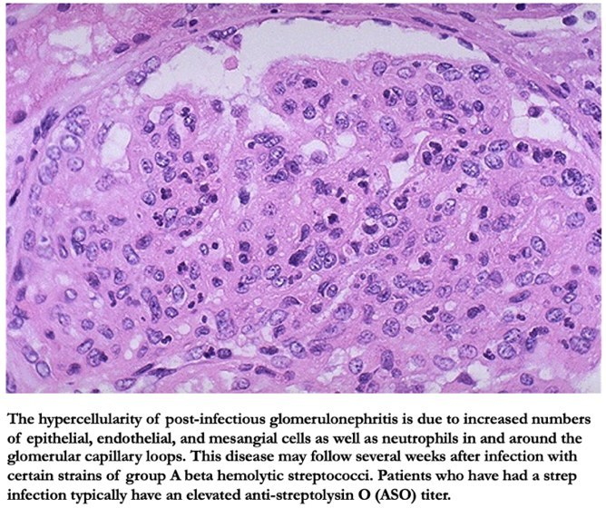
FIGURE | Post-infectious glomerulonephritis histology (source: integrated study guide, p.133).
Nephrotic Syndrome
RENAL | CONDITION 4 OF 5 | STUDY GUIDE p.135
| CLINICAL STEM A patient presents with morning eyelid swelling, generalised pitting oedema and frothy urine; urine dipstick is 4+ protein. |
|---|
MECHANISM | WHY THE CLINICAL FEATURES OCCUR
Podocyte and glomerular filtration barrier injury causes heavy albumin loss, lowering plasma oncotic pressure and promoting oedema. Reduced effective circulating volume and renal sodium retention intensify oedema. Urinary loss of antithrombin III promotes thrombosis; immunoglobulin loss increases susceptibility to infection.
RECOGNISE & DISCRIMINATE
|
INVESTIGATIONS & RESULTS
|
|---|
SAFE INITIAL ACTIONS | DRUGS AND THERAPY
• Refer for underlying-cause assessment and treatment; manage oedema with cautious salt restriction and prescribed diuretics.
• ACEi/ARB may reduce proteinuria where appropriate; immunosuppression depends on histological diagnosis and specialist advice.
• Recognise DVT/PE, spontaneous infection and intravascular depletion as complications.
EXAM PEARLS & BUZZWORDS
|
|---|
VSAQ PROMPT What is the adult nephrotic proteinuria threshold? Answer: >3.5 g/day
EXAM TRAP Nephrotic syndrome may have microscopic haematuria; distinguish by the predominant heavy protein loss.
Renal Calculi (Urolithiasis)
RENAL | CONDITION 5 OF 5 | STUDY GUIDE p.138
| CLINICAL STEM A 33-year-old has sudden excruciating flank pain radiating to the groin, nausea and microscopic haematuria. |
|---|
MECHANISM | WHY THE CLINICAL FEATURES OCCUR
Urine supersaturation with crystal-forming solutes leads to stone formation. Ureteric obstruction causes increased pressure and smooth muscle spasm, explaining colicky flank-to-groin pain. Infection above an obstructing stone can cause rapidly progressive sepsis.
RECOGNISE & DISCRIMINATE
|
INVESTIGATIONS & RESULTS
|
|---|
SAFE INITIAL ACTIONS | DRUGS AND THERAPY
• Pain control (often NSAID if renal function permits), antiemetic, fluid guidance and follow-up for uncomplicated stones.
• Urgent urology if infected obstructed system, anuria, solitary kidney with obstruction, AKI or uncontrolled symptoms.
• Stone prevention depends on type; encourage appropriate hydration and targeted metabolic evaluation for recurrent stones.
EXAM PEARLS & BUZZWORDS
|
|---|
VSAQ PROMPT What bacteria classically form struvite stones? Answer: Proteus mirabilis
EXAM TRAP Not all stones cause visible haematuria; an obstructed infected kidney is a surgical emergency.
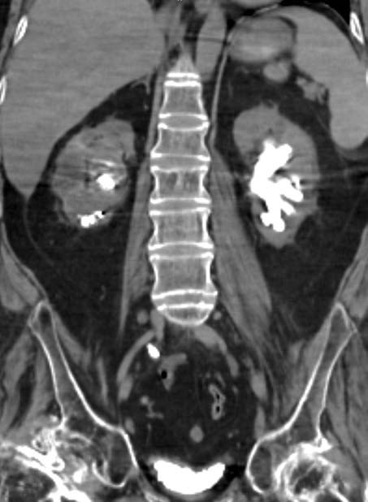
FIGURE | Coronal CT example of renal calculi (source: integrated study guide, p.139).
PART II — GASTROINTESTINAL
18 examinable conditions
Every following condition follows: clinical stem → why it happens → discriminate → tests → safest steps → exam pearls. The section labels are organisational and do not imply marks weighting.
Severe Acute Malnutrition (SAM)
GIT | CONDITION 1 OF 18 | STUDY GUIDE p.150
| CLINICAL STEM An 18-month-old with very low mid-upper arm circumference (MUAC), bilateral pitting oedema, lethargy, hypothermia and low glucose. |
|---|
MECHANISM | WHY THE CLINICAL FEATURES OCCUR
Starvation reduces metabolic rate, cardiac reserve and immune defence. Gut mucosal atrophy impairs absorption. Kwashiorkor oedema is multifactorial (low albumin, oxidative stress and impaired membrane function); fatty liver occurs with altered lipid export. Rapid or indiscriminate feeding risks electrolyte shifts and refeeding syndrome.
RECOGNISE & DISCRIMINATE
|
INVESTIGATIONS & RESULTS
|
|---|
SAFE INITIAL ACTIONS | DRUGS AND THERAPY
• Initial inpatient care for complicated SAM follows cautious WHO-style stabilisation: treat/prevent hypoglycaemia, hypothermia, infection and electrolyte issues; use appropriate starter feeds (F-75) under protocol.
• Transition to catch-up feeding (often F-100/RUTF under local protocol) after stabilisation; engage family and address food security.
• Do not give rapid large-volume IV fluids unless shock is established and supervised.
EXAM PEARLS & BUZZWORDS
|
|---|
VSAQ PROMPT What bedside measure screens for acute malnutrition? Answer: MUAC
EXAM TRAP Oedema can conceal severe weight loss; do not classify a child as well nourished based on weight alone.
Acute Gastroenteritis
GIT | CONDITION 2 OF 18 | STUDY GUIDE p.153
| CLINICAL STEM A child has abrupt vomiting and watery diarrhoea after a household viral illness, with dry eyes, reduced tears and decreased urine output. |
|---|
MECHANISM | WHY THE CLINICAL FEATURES OCCUR
Infectious inflammation or enterotoxins disrupt intestinal absorption and secretion, causing water/electrolyte losses. Rotavirus damages mature enterocytes and creates osmotic malabsorption; norovirus causes acute contagious vomiting/diarrhoea. The main immediate danger is dehydration progressing to hypovolaemic shock.
RECOGNISE & DISCRIMINATE
|
INVESTIGATIONS & RESULTS
|
|---|
SAFE INITIAL ACTIONS | DRUGS AND THERAPY
• Oral rehydration solution (ORS) for mild/moderate dehydration; continue breastfeeding/age-appropriate feeds.
• Carefully supervised IV isotonic fluids for shock or failed oral rehydration; zinc supplementation in children may be indicated according to local protocols.
• Antibiotics are not routine for viral or uncomplicated watery gastroenteritis.
EXAM PEARLS & BUZZWORDS
|
|---|
VSAQ PROMPT Which transporter makes ORS effective? Answer: SGLT1
EXAM TRAP Do not use antidiarrhoeals that suppress motility in young children or with bloody diarrhoea.
Diarrhoea — Clinical Approach
GIT | CONDITION 3 OF 18 | STUDY GUIDE p.156
| CLINICAL STEM A patient reports persistent loose stools, weight loss and nocturnal bowel motions; stool appearance suggests either watery, fatty or inflammatory disease. |
|---|
MECHANISM | WHY THE CLINICAL FEATURES OCCUR
Diarrhoea reflects excess secretion, failure of absorption, mucosal inflammation or abnormal transit. Osmotic diarrhoea improves with fasting because unabsorbed solutes retain water; secretory diarrhoea persists during fasting because ions are actively secreted. Steatorrhoea reflects fat malabsorption.
RECOGNISE & DISCRIMINATE
|
INVESTIGATIONS & RESULTS
|
|---|
SAFE INITIAL ACTIONS | DRUGS AND THERAPY
• Replace fluid and electrolytes; manage cause; avoid unnecessary antibiotics.
• Bloody diarrhoea with toxicity or suspected inflammatory colitis needs prompt clinical evaluation.
• Public health: safe water, food handling, sanitation and outbreak notification where appropriate.
EXAM PEARLS & BUZZWORDS
|
|---|
VSAQ PROMPT What mechanism explains lactose-induced diarrhoea? Answer: Osmotic diarrhoea
EXAM TRAP Not every loose stool is an infection; chronic diarrhoea with red flags deserves investigation.
Food Poisoning
GIT | CONDITION 4 OF 18 | STUDY GUIDE p.158
| CLINICAL STEM Several classmates develop intense vomiting within hours of the same meal, but most recover within a day. |
|---|
MECHANISM | WHY THE CLINICAL FEATURES OCCUR
Food-borne illness may result from ingested preformed toxins, toxins produced in the intestine or invasive organisms. The incubation interval and predominant symptom are major discriminators.
RECOGNISE & DISCRIMINATE
|
INVESTIGATIONS & RESULTS
|
|---|
SAFE INITIAL ACTIONS | DRUGS AND THERAPY
• Oral fluids and monitoring are usually sufficient for preformed-toxin syndromes.
• Prompt outbreak reporting and food-safety measures prevent further cases. Antibiotics do not neutralise preformed toxin.
EXAM PEARLS & BUZZWORDS
|
|---|
VSAQ PROMPT Which organism classically causes fried-rice emetic illness? Answer: Bacillus cereus
EXAM TRAP Do not automatically prescribe antibiotics for an outbreak dominated by very rapid vomiting.
Shigellosis (Bacillary Dysentery)
GIT | CONDITION 5 OF 18 | STUDY GUIDE p.160
| CLINICAL STEM A 3-year-old develops fever, tenesmus and many small bloody, mucoid stools in a childcare outbreak. |
|---|
MECHANISM | WHY THE CLINICAL FEATURES OCCUR
Shigella are non-motile, Gram-negative Enterobacterales with a very low infectious dose. They invade colonic epithelium through M cells and spread between cells, provoking neutrophilic inflammation and ulceration. Shiga toxin (particularly S. dysenteriae type 1) inhibits the 60S ribosome and may cause haemolytic uraemic syndrome (HUS).
RECOGNISE & DISCRIMINATE
|
INVESTIGATIONS & RESULTS
|
|---|
SAFE INITIAL ACTIONS | DRUGS AND THERAPY
• Assess dehydration; institute hygiene/infection control and appropriate selected antibiotics guided by local protocols/resistance.
• Urgent admission for neurological signs, severe dehydration, AKI, oliguria or HUS.
EXAM PEARLS & BUZZWORDS
|
|---|
VSAQ PROMPT Which ribosomal subunit is blocked by Shiga toxin? Answer: 60S
EXAM TRAP Avoid assuming that all bloody diarrhoea should receive empirical antibiotics without considering STEC/EHEC and local guidance.
Giardiasis
GIT | CONDITION 6 OF 18 | STUDY GUIDE p.162
| CLINICAL STEM A hiker develops prolonged foul-smelling, greasy stools, bloating and weight loss after drinking untreated water. |
|---|
MECHANISM | WHY THE CLINICAL FEATURES OCCUR
Giardia duodenalis is a flagellated protozoan transmitted as faecal-oral cysts. Trophozoites attach to the proximal small-intestinal brush border, causing villous/microvillus damage and fat/carbohydrate malabsorption without deep mucosal invasion.
RECOGNISE & DISCRIMINATE
|
INVESTIGATIONS & RESULTS
|
|---|
SAFE INITIAL ACTIONS | DRUGS AND THERAPY
• Treatment options include metronidazole or tinidazole under protocol; replace fluids and correct nutritional deficiencies.
• Safe water, filtration/boiling and hand hygiene prevent reinfection.
EXAM PEARLS & BUZZWORDS
|
|---|
VSAQ PROMPT What is the infective stage of Giardia? Answer: Cyst
EXAM TRAP Do not mistake prolonged steatorrhoea for acute dysentery.
Constipation
GIT | CONDITION 7 OF 18 | STUDY GUIDE p.164
| CLINICAL STEM An older patient taking opioids has infrequent hard stools, straining and bloating; there is no bleeding or weight loss. |
|---|
MECHANISM | WHY THE CLINICAL FEATURES OCCUR
Slow colonic transit, impaired rectal evacuation or medication effects increase water extraction from stool. Opioid μ-receptor activation reduces propulsive motility and increases sphincter tone.
RECOGNISE & DISCRIMINATE
|
INVESTIGATIONS & RESULTS
|
|---|
SAFE INITIAL ACTIONS | DRUGS AND THERAPY
• Optimise fibre, hydration, activity and toileting routine where suitable.
• Bulk-forming agents, osmotic laxatives (macrogol/lactulose) or stimulants (senna/bisacodyl) chosen by cause.
• Bowel obstruction (distension, vomiting, no flatus, severe pain) needs urgent assessment, not routine laxatives.
EXAM PEARLS & BUZZWORDS
|
|---|
VSAQ PROMPT Which receptor mediates opioid-related constipation? Answer: Mu-opioid receptor
EXAM TRAP Do not label new-onset constipation as functional when red flags are present.
Irritable Bowel Syndrome (IBS)
GIT | CONDITION 8 OF 18 | STUDY GUIDE p.166
| CLINICAL STEM A 23-year-old has months of episodic lower abdominal pain associated with stool frequency and form changes, without blood, fever or weight loss. |
|---|
MECHANISM | WHY THE CLINICAL FEATURES OCCUR
IBS is a disorder of gut–brain interaction, visceral hypersensitivity and altered gastrointestinal motility. Stress, diet and previous gastroenteritis can affect symptoms; there is no characteristic destructive mucosal inflammation.
RECOGNISE & DISCRIMINATE
|
INVESTIGATIONS & RESULTS
|
|---|
SAFE INITIAL ACTIONS | DRUGS AND THERAPY
• Explain functional gut–brain mechanisms, identify trigger foods, individualise dietary measures and stress support.
• Symptom-based treatment may include soluble fibre, antispasmodics or tailored diarrhoea/constipation management.
EXAM PEARLS & BUZZWORDS
|
|---|
VSAQ PROMPT Which framework is used to diagnose IBS? Answer: Rome IV
EXAM TRAP IBS is not the same as IBD; raised faecal calprotectin and bloody diarrhoea support inflammation.
Gastro-Oesophageal Reflux Disease (GORD)
GIT | CONDITION 9 OF 18 | STUDY GUIDE p.168
| CLINICAL STEM An obese adult reports burning retrosternal pain after meals and sour regurgitation when lying down. |
|---|
MECHANISM | WHY THE CLINICAL FEATURES OCCUR
Transient lower oesophageal sphincter relaxation, hiatus hernia or raised intra-abdominal pressure permits gastric acid reflux. Chronic acid exposure causes oesophagitis and possibly Barrett metaplasia (distal oesophageal squamous epithelium replaced by specialised intestinal columnar epithelium).
RECOGNISE & DISCRIMINATE
|
INVESTIGATIONS & RESULTS
|
|---|
SAFE INITIAL ACTIONS | DRUGS AND THERAPY
• Weight reduction when relevant, avoid late meals, elevate head of bed; proton-pump inhibitor (PPI) trial is a key treatment.
• PPIs irreversibly inhibit parietal H+/K+-ATPase; H2 blockers inhibit histamine H2 receptors.
• Progressive dysphagia or bleeding → urgent endoscopic assessment.
EXAM PEARLS & BUZZWORDS
|
|---|
VSAQ PROMPT Which pump is inhibited by proton-pump inhibitors? Answer: H+/K+-ATPase
EXAM TRAP Chest pain cannot be assumed to be reflux before excluding acute coronary syndrome in a concerning presentation.
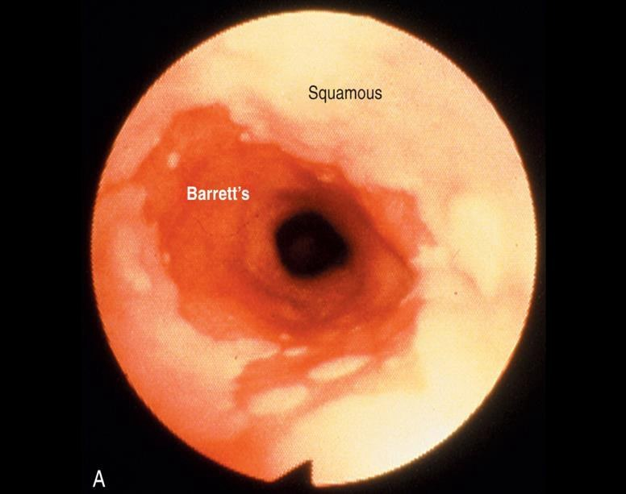
FIGURE | Endoscopic appearance of Barrett oesophagus (source: integrated study guide, p.169).
Peptic Ulcer Disease (PUD)
GIT | CONDITION 10 OF 18 | STUDY GUIDE p.171
| CLINICAL STEM A middle-aged adult taking NSAIDs has gnawing epigastric pain, sometimes nocturnal, and later develops melaena. |
|---|
MECHANISM | WHY THE CLINICAL FEATURES OCCUR
An ulcer extends through the muscularis mucosae after loss of mucosal protection relative to acid-pepsin injury. Helicobacter pylori induces chronic gastritis; NSAIDs inhibit prostaglandins, reducing mucus, bicarbonate secretion and mucosal blood flow.
RECOGNISE & DISCRIMINATE
|
INVESTIGATIONS & RESULTS
|
|---|
SAFE INITIAL ACTIONS | DRUGS AND THERAPY
• PPI to suppress acid; eradicate H. pylori with locally appropriate combination antibiotic therapy and confirm cure according to protocol.
• Stop/avoid NSAIDs where possible; urgent hospital assessment for bleeding/perforation.
EXAM PEARLS & BUZZWORDS
|
|---|
VSAQ PROMPT Which bacterial enzyme helps H. pylori survive acid? Answer: Urease
EXAM TRAP Pain relief after meals does not prove a duodenal ulcer; malignancy may mimic a gastric ulcer.
Upper Gastrointestinal Bleed (UGIB)
GIT | CONDITION 11 OF 18 | STUDY GUIDE p.174
| CLINICAL STEM A patient vomits blood, has black tarry stool, tachycardia and postural hypotension; another with cirrhosis presents with massive haematemesis. |
|---|
MECHANISM | WHY THE CLINICAL FEATURES OCCUR
Bleeding proximal to the ligament of Treitz most often arises from peptic ulceration, erosions, varices or Mallory–Weiss tears. Portal hypertension produces oesophageal varices that may rupture catastrophically.
RECOGNISE & DISCRIMINATE
|
INVESTIGATIONS & RESULTS
|
|---|
SAFE INITIAL ACTIONS | DRUGS AND THERAPY
• Resuscitate, request urgent senior/endoscopy support. PPIs are used for suspected non-variceal ulcer-related bleeding according to protocol.
• If variceal bleeding suspected: add vasoactive therapy (e.g. terlipressin) plus antibiotics, and urgent endoscopic treatment.
• Do not delay stabilisation to obtain endoscopy; blood products guided by clinical status and haemoglobin.
EXAM PEARLS & BUZZWORDS
|
|---|
VSAQ PROMPT Where is the anatomical boundary for UGIB? Answer: Ligament of Treitz
EXAM TRAP An initially normal haemoglobin does not exclude major acute bleeding.
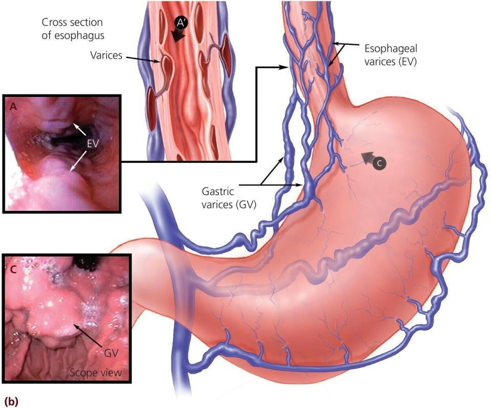
FIGURE | Sites of portal-systemic varices and upper gastrointestinal bleeding (study guide, p.175).
Ulcerative Colitis (UC)
GIT | CONDITION 12 OF 18 | STUDY GUIDE p.177
| CLINICAL STEM A young adult has recurrent bloody diarrhoea, urgency and tenesmus with abdominal pain; colonoscopy shows continuous inflammation from the rectum. |
|---|
MECHANISM | WHY THE CLINICAL FEATURES OCCUR
Chronic immune-mediated inflammation predominantly affects the colonic mucosa and submucosa. Continuous superficial inflammation produces friability, crypt abscesses and bloody diarrhoea; longstanding disease raises colorectal cancer risk.
RECOGNISE & DISCRIMINATE
|
INVESTIGATIONS & RESULTS
|
|---|
SAFE INITIAL ACTIONS | DRUGS AND THERAPY
• 5-ASA (mesalazine) is key for mild-moderate disease; corticosteroids for selected flares; immunomodulators/biologics for advanced disease under specialist care.
• Acute severe colitis/toxic megacolon: admit urgently, assess for sepsis/perforation, avoid unnecessary antiperistaltics and obtain specialist care.
EXAM PEARLS & BUZZWORDS
|
|---|
VSAQ PROMPT What inflammatory bowel disease has continuous rectal involvement? Answer: Ulcerative colitis
EXAM TRAP IBS does not produce chronic bloody diarrhoea or mucosal ulceration.
Colorectal Cancer (CRC)
GIT | CONDITION 13 OF 18 | STUDY GUIDE p.180
| CLINICAL STEM An older patient develops change in bowel habit, unintentional weight loss and iron-deficiency anaemia; another has progressive obstruction. |
|---|
MECHANISM | WHY THE CLINICAL FEATURES OCCUR
Colorectal adenocarcinoma develops through chromosomal instability (classic APC → KRAS → p53 adenoma–carcinoma sequence) or mismatch-repair defects causing microsatellite instability (Lynch syndrome). Early disease may bleed silently; a mass may obstruct the lumen.
RECOGNISE & DISCRIMINATE
|
INVESTIGATIONS & RESULTS
|
|---|
SAFE INITIAL ACTIONS | DRUGS AND THERAPY
• Early recognition and urgent diagnostic referral; treatment combines surgery and stage-specific oncological care.
• Consider genetic counselling when family pattern suggests hereditary syndrome; explain referral and screening equitably.
EXAM PEARLS & BUZZWORDS
|
|---|
VSAQ PROMPT Which investigation confirms colorectal cancer? Answer: Colonoscopy biopsy
EXAM TRAP A negative faecal occult blood test does not reliably exclude CRC in a symptomatic high-risk patient.
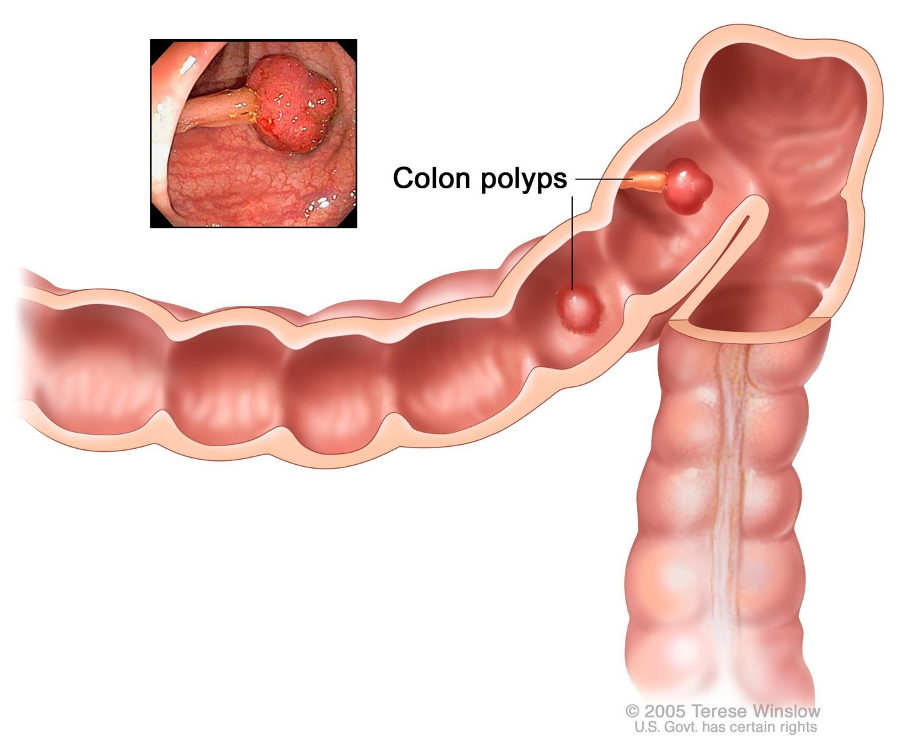
FIGURE | Illustrated spectrum of colorectal polyp disease (study guide, p.181).
Gallstones and Biliary Colic
GIT | CONDITION 14 OF 18 | STUDY GUIDE p.183
| CLINICAL STEM A patient develops intermittent severe right-upper-quadrant pain after a fatty meal lasting an hour, then completely resolves without fever. |
|---|
MECHANISM | WHY THE CLINICAL FEATURES OCCUR
Transient cystic-duct obstruction by a gallstone increases gallbladder pressure during contraction. Cholesterol stones relate to supersaturated bile, nucleation and hypomotility; pigment stones are associated with haemolysis or infection.
RECOGNISE & DISCRIMINATE
|
INVESTIGATIONS & RESULTS
|
|---|
SAFE INITIAL ACTIONS | DRUGS AND THERAPY
• Analgesia/antiemetics for uncomplicated biliary colic; elective cholecystectomy may be considered for symptomatic stones.
• Fever, jaundice, hypotension or altered mental status suggests cholangitis and requires immediate hospital evaluation.
EXAM PEARLS & BUZZWORDS
|
|---|
VSAQ PROMPT What duct is transiently obstructed in biliary colic? Answer: Cystic duct
EXAM TRAP A positive Murphy sign and prolonged pain suggest cholecystitis rather than simple colic.
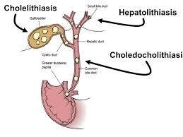
FIGURE | Gallbladder and common bile duct obstruction patterns (study guide, p.184).
Acute Cholecystitis
GIT | CONDITION 15 OF 18 | STUDY GUIDE p.185
| CLINICAL STEM A patient has constant right-upper-quadrant pain for more than six hours, fever, vomiting and focal tenderness on inspiration. |
|---|
MECHANISM | WHY THE CLINICAL FEATURES OCCUR
Persistent cystic-duct obstruction causes gallbladder distension, chemical and bacterial inflammation, and sometimes wall ischaemia. This is distinct from transient obstruction of uncomplicated biliary colic.
RECOGNISE & DISCRIMINATE
|
INVESTIGATIONS & RESULTS
|
|---|
SAFE INITIAL ACTIONS | DRUGS AND THERAPY
• Hospital review, IV fluids when needed, analgesia, antibiotics when indicated and early surgical assessment for cholecystectomy.
• Hypotension, jaundice, rigors or confusion raises concern for cholangitis and requires urgent escalation.
EXAM PEARLS & BUZZWORDS
|
|---|
VSAQ PROMPT What bedside sign suggests gallbladder inflammation? Answer: Murphy sign
EXAM TRAP Mild transient biliary colic does not typically produce sustained fever or raised inflammatory markers.
Acute Pancreatitis
GIT | CONDITION 16 OF 18 | STUDY GUIDE p.187
| CLINICAL STEM An adult develops sudden severe epigastric pain radiating to the back, vomiting and marked serum lipase elevation. |
|---|
MECHANISM | WHY THE CLINICAL FEATURES OCCUR
Premature intrapancreatic activation of digestive enzymes causes acinar-cell injury, inflammation and fat necrosis. Gallstones can obstruct the ampulla; alcohol is another major trigger. Systemic inflammation causes capillary leak, hypovolaemia and sometimes multi-organ failure.
RECOGNISE & DISCRIMINATE
|
INVESTIGATIONS & RESULTS
|
|---|
SAFE INITIAL ACTIONS | DRUGS AND THERAPY
• Early monitored IV fluid resuscitation (avoiding overload), effective analgesia and appropriately timed nutrition.
• Treat cause: gallstone management; urgent ERCP if associated cholangitis/ongoing biliary obstruction per specialist decision.
• Do not routinely give prophylactic antibiotics for sterile pancreatitis.
EXAM PEARLS & BUZZWORDS
|
|---|
VSAQ PROMPT Which enzyme is preferred to support pancreatitis diagnosis? Answer: Lipase
EXAM TRAP Normal lipase very early or late can be misleading; diagnosis requires clinical context and criteria.
Liver Cirrhosis
GIT | CONDITION 17 OF 18 | STUDY GUIDE p.190
| CLINICAL STEM A patient with longstanding alcohol use or chronic viral hepatitis has jaundice, ascites, spider naevi, easy bruising and an enlarged spleen. |
|---|
MECHANISM | WHY THE CLINICAL FEATURES OCCUR
Chronic liver injury causes stellate-cell activation, collagen deposition and regenerative nodules. Fibrosis distorts sinusoids → portal hypertension, while loss of hepatocyte function lowers albumin and clotting factor synthesis and disrupts bilirubin metabolism.
RECOGNISE & DISCRIMINATE
|
INVESTIGATIONS & RESULTS
|
|---|
SAFE INITIAL ACTIONS | DRUGS AND THERAPY
• Address underlying cause and complications; avoid hepatotoxins, support nutrition and referral.
• Lactulose helps treat hepatic encephalopathy by reducing gut ammonia absorption; rifaximin may be added under protocol.
• Variceal bleed, suspected SBP, encephalopathy or rapidly worsening jaundice are emergencies.
EXAM PEARLS & BUZZWORDS
|
|---|
VSAQ PROMPT What cell type drives collagen deposition in cirrhosis? Answer: Hepatic stellate cells
EXAM TRAP A patient may have advanced liver disease with only modest ALT/AST elevation.
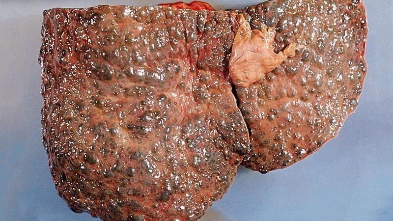
FIGURE | Cirrhotic liver gross pathology (source: integrated study guide, p.191).
Ascites
GIT | CONDITION 18 OF 18 | STUDY GUIDE p.193
| CLINICAL STEM A patient with cirrhosis presents with increasing abdominal girth, shifting dullness, ankle oedema and low serum albumin. |
|---|
MECHANISM | WHY THE CLINICAL FEATURES OCCUR
In cirrhosis, portal hypertension raises hydrostatic pressure and splanchnic vasodilation reduces effective circulating volume. RAAS and ADH activation cause renal sodium/water retention, producing ascites. Ascitic fluid becomes infected in spontaneous bacterial peritonitis (SBP) without a perforated viscus.
RECOGNISE & DISCRIMINATE
|
INVESTIGATIONS & RESULTS
|
|---|
SAFE INITIAL ACTIONS | DRUGS AND THERAPY
• Treat cause; sodium restriction and spironolactone ± furosemide according to clinical monitoring.
• Large-volume paracentesis with albumin replacement under appropriate protocols; urgent antibiotics if SBP suspected.
EXAM PEARLS & BUZZWORDS
|
|---|
VSAQ PROMPT What ascitic neutrophil count diagnoses SBP? Answer: ≥250 cells/µL
EXAM TRAP Do not wait for culture positivity before treating clinically suspected SBP.
PART III — MUSCULOSKELETAL
10 examinable conditions
Every following condition follows: clinical stem → why it happens → discriminate → tests → safest steps → exam pearls. The section labels are organisational and do not imply marks weighting.
Closed Long-Bone Fractures
MSK | CONDITION 1 OF 10 | STUDY GUIDE p.210
| CLINICAL STEM A patient falls, develops pain, deformity and inability to bear weight; distal pulses and sensation must be documented. |
|---|
MECHANISM | WHY THE CLINICAL FEATURES OCCUR
Excess mechanical force exceeds bone strength. Fracture healing proceeds through haematoma/inflammation → soft callus → hard woven-bone callus → remodelling. Early danger comes from haemorrhage, neurovascular injury, compartment pressure or fat embolism.
RECOGNISE & DISCRIMINATE
|
INVESTIGATIONS & RESULTS
|
|---|
SAFE INITIAL ACTIONS | DRUGS AND THERAPY
• Immobilise, provide analgesia, assess ABCs after major trauma and promptly refer displaced/unstable fractures.
• Suspected compartment syndrome requires immediate emergency surgical assessment; remove constrictive dressings and keep limb at appropriate level pending specialist care.
EXAM PEARLS & BUZZWORDS
|
|---|
VSAQ PROMPT What is the earliest key compartment-syndrome symptom? Answer: Disproportionate pain
EXAM TRAP A palpable distal pulse does not rule out compartment syndrome.
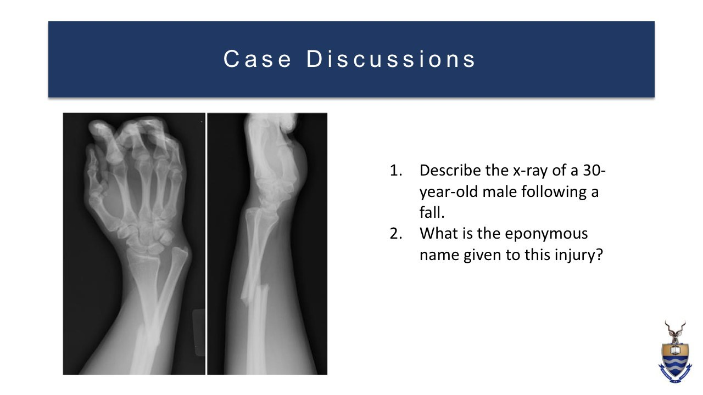
FIGURE | Examples of fracture patterns and X-ray interpretation (study guide, p.210).
Anterior Cruciate Ligament (ACL) Injury
MSK | CONDITION 2 OF 10 | STUDY GUIDE p.213
| CLINICAL STEM A footballer twists on a planted knee, hears a "pop", develops immediate swelling and cannot continue playing. |
|---|
MECHANISM | WHY THE CLINICAL FEATURES OCCUR
The ACL prevents anterior translation of the tibia relative to the femur and contributes rotational stability. Pivoting/valgus rotation can rupture the ligament and cause haemarthrosis. Associated meniscal and medial collateral ligament injury may occur.
RECOGNISE & DISCRIMINATE
|
INVESTIGATIONS & RESULTS
|
|---|
SAFE INITIAL ACTIONS | DRUGS AND THERAPY
• Early protection, ice, compression, elevation, analgesia and physiotherapy/orthopaedic referral as indicated.
• A locked knee, major deformity or neurovascular deficit warrants urgent review.
EXAM PEARLS & BUZZWORDS
|
|---|
VSAQ PROMPT Which bedside test is most associated with ACL rupture? Answer: Lachman test
EXAM TRAP A swollen knee can obscure laxity testing; a negative painful acute examination does not fully exclude ACL injury.
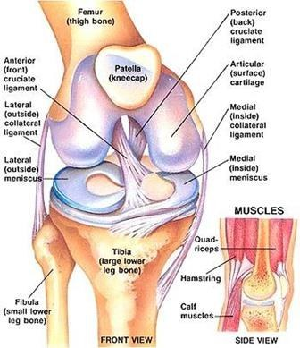
FIGURE | Knee ligament anatomy (integrated study guide, p.214).
Spinal Cord Injury
MSK | CONDITION 3 OF 10 | STUDY GUIDE p.216
| CLINICAL STEM A patient after a diving injury has limb weakness, sensory loss and hypotension with relative bradycardia. |
|---|
MECHANISM | WHY THE CLINICAL FEATURES OCCUR
Traumatic vertebral injury can compress/disrupt spinal cord tracts. Primary mechanical injury is followed by secondary oedema, ischaemia and excitotoxic injury. Neurogenic shock results from loss of sympathetic vascular tone after high cord injury; spinal shock is transient loss of reflexes below the lesion.
RECOGNISE & DISCRIMINATE
|
INVESTIGATIONS & RESULTS
|
|---|
SAFE INITIAL ACTIONS | DRUGS AND THERAPY
• Urgent trauma/spine specialist care; maintain oxygenation and perfusion, prevent pressure injuries.
• Avoid unnecessary movement. Neurogenic shock may need vasoactive support under supervised protocols.
EXAM PEARLS & BUZZWORDS
|
|---|
VSAQ PROMPT What type of shock follows loss of sympathetic cord outflow? Answer: Neurogenic shock
EXAM TRAP Do not confuse neurogenic shock (haemodynamics) with spinal shock (transient reflex loss).
Osteoporosis
MSK | CONDITION 4 OF 10 | STUDY GUIDE p.218
| CLINICAL STEM An older postmenopausal woman develops a vertebral compression fracture after minimal trauma and has lost height. |
|---|
MECHANISM | WHY THE CLINICAL FEATURES OCCUR
Bone resorption exceeds bone formation, reducing bone mass and disrupting trabecular microarchitecture; mineralisation of the remaining bone is relatively normal (unlike osteomalacia). Oestrogen deficiency increases RANKL-mediated osteoclast activity.
RECOGNISE & DISCRIMINATE
|
INVESTIGATIONS & RESULTS
|
|---|
SAFE INITIAL ACTIONS | DRUGS AND THERAPY
• Fall prevention, resistance exercise, adequate calcium/vitamin D and correction of risks.
• Bisphosphonates inhibit osteoclast-mediated resorption; denosumab targets RANKL in selected patients.
• Hip fracture or suspected vertebral fracture with neurology requires urgent care.
EXAM PEARLS & BUZZWORDS
|
|---|
VSAQ PROMPT What cell is inhibited by bisphosphonates? Answer: Osteoclast
EXAM TRAP Normal serum calcium does not exclude osteoporosis.
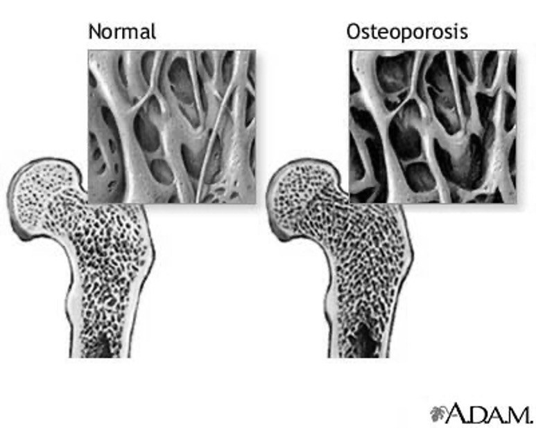
FIGURE | Normal vs osteoporotic bone microarchitecture (study guide, p.219).
Vitamin D Deficiency (Rickets/Osteomalacia)
MSK | CONDITION 5 OF 10 | STUDY GUIDE p.221
| CLINICAL STEM A child has bowed legs and widened wrists; an adult with low vitamin D has diffuse bone pain and proximal muscle weakness. |
|---|
MECHANISM | WHY THE CLINICAL FEATURES OCCUR
Vitamin D is activated in liver to 25-OH vitamin D and kidney to 1,25-(OH)2 vitamin D (calcitriol). Calcitriol increases intestinal calcium/phosphate absorption. Deficiency impairs osteoid mineralisation: rickets at growing physes, osteomalacia after growth plates close.
RECOGNISE & DISCRIMINATE
|
INVESTIGATIONS & RESULTS
|
|---|
SAFE INITIAL ACTIONS | DRUGS AND THERAPY
• Vitamin D and calcium replacement according to assessment; address diet, sunlight exposure safely and underlying cause.
• Distinguish from osteoporosis (normal mineralisation but less bone).
EXAM PEARLS & BUZZWORDS
|
|---|
VSAQ PROMPT Which vitamin D test assesses body stores? Answer: 25-OH vitamin D
EXAM TRAP Rickets is a growth-plate disease; it does not develop after epiphyseal closure.
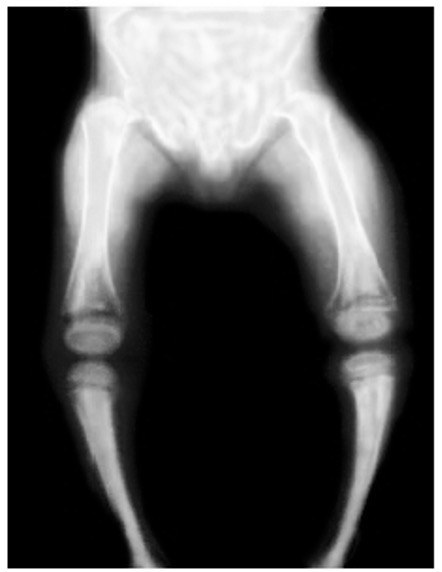
FIGURE | Radiographic rickets features (study guide, p.222).
Osteoarthritis (OA)
MSK | CONDITION 6 OF 10 | STUDY GUIDE p.223
| CLINICAL STEM A 67-year-old has knee pain worsened by use, brief morning stiffness and crepitus; DIP joints show Heberden nodes. |
|---|
MECHANISM | WHY THE CLINICAL FEATURES OCCUR
Degeneration and attempted repair of articular cartilage, changes in subchondral bone and osteophyte formation cause mechanical joint pain. Cartilage lacks innervation; pain arises from synovium, capsule and subchondral bone.
RECOGNISE & DISCRIMINATE
|
INVESTIGATIONS & RESULTS
|
|---|
SAFE INITIAL ACTIONS | DRUGS AND THERAPY
• Strengthening/weight optimisation, appropriate activity, physiotherapy and simple/topical analgesia; NSAIDs when appropriate with risk assessment.
• Refer for severe disability or joint replacement consideration.
EXAM PEARLS & BUZZWORDS
|
|---|
VSAQ PROMPT What radiographic spur is typical of osteoarthritis? Answer: Osteophyte
EXAM TRAP Marked prolonged morning stiffness and systemic inflammation favour rheumatoid/inflammatory arthritis.
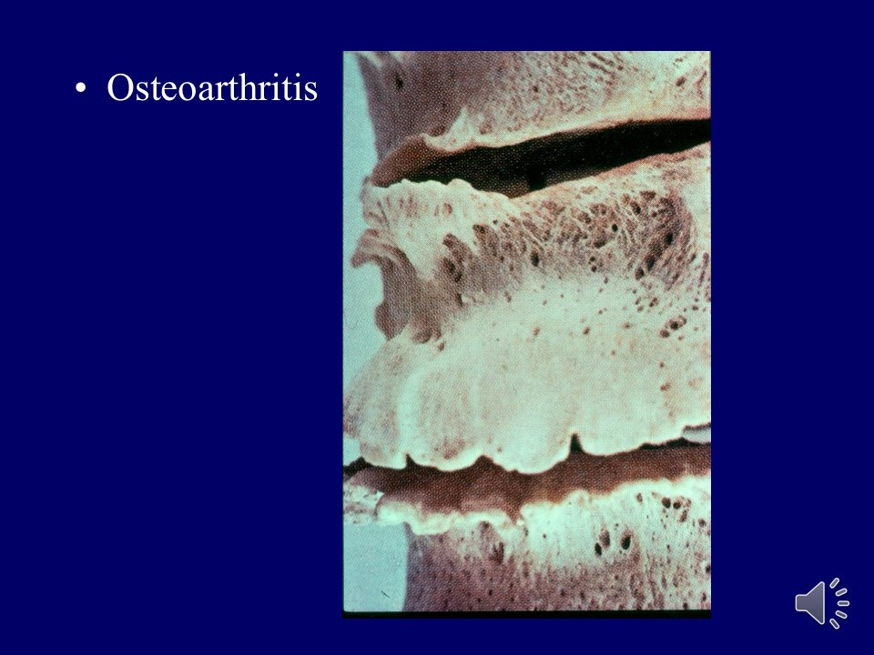
FIGURE | Articular cartilage changes in osteoarthritis (study guide, p.224).
Rheumatoid Arthritis (RA)
MSK | CONDITION 7 OF 10 | STUDY GUIDE p.226
| CLINICAL STEM A 38-year-old has symmetrical painful swollen MCP and PIP joints, fatigue and morning stiffness lasting more than an hour. |
|---|
MECHANISM | WHY THE CLINICAL FEATURES OCCUR
Autoimmune synovial inflammation produces pannus (inflamed invasive granulation tissue), which erodes cartilage and bone. TNF-α, IL-1 and IL-6 drive persistent inflammation; autoantibodies may include rheumatoid factor and anti-CCP.
RECOGNISE & DISCRIMINATE
|
INVESTIGATIONS & RESULTS
|
|---|
SAFE INITIAL ACTIONS | DRUGS AND THERAPY
• Early rheumatology referral and disease-modifying therapy; methotrexate is a common anchor DMARD and requires monitoring/folate.
• Short-term anti-inflammatory relief does not replace DMARD treatment. Infection must be excluded in an acutely hot single joint.
EXAM PEARLS & BUZZWORDS
|
|---|
VSAQ PROMPT What tissue destroys cartilage and bone in RA? Answer: Pannus
EXAM TRAP Rheumatoid factor is not fully specific; anti-CCP helps but clinical pattern remains essential.
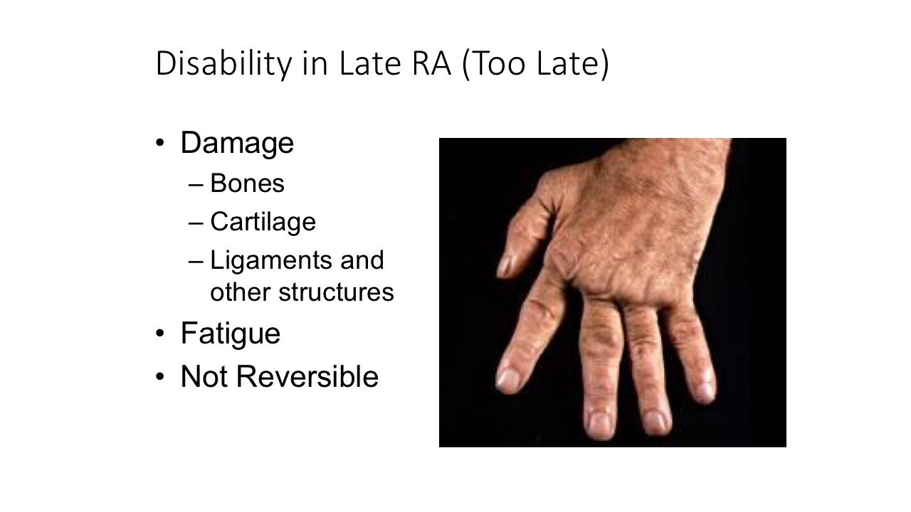
FIGURE | Rheumatoid hand radiographs with erosive changes (study guide, p.227).
Gout
MSK | CONDITION 8 OF 10 | STUDY GUIDE p.229
| CLINICAL STEM A 58-year-old man develops abrupt severe pain in the first MTP joint overnight; the toe is hot, swollen and exquisitely tender. |
|---|
MECHANISM | WHY THE CLINICAL FEATURES OCCUR
Hyperuricaemia allows monosodium urate crystals to precipitate, especially in cooler peripheral joints. Macrophage NLRP3 inflammasome activation and IL-1β recruit neutrophils, producing intense acute inflammation. Longstanding disease produces tophi and erosions.
RECOGNISE & DISCRIMINATE
|
INVESTIGATIONS & RESULTS
|
|---|
SAFE INITIAL ACTIONS | DRUGS AND THERAPY
• Acute attacks: NSAID, colchicine or glucocorticoid depending on contraindications and infection exclusion.
• Long-term urate lowering (e.g. allopurinol/xanthine oxidase inhibition) for selected recurrent/severe gout with prophylaxis/monitoring.
• Urate-lowering therapy is not a substitute for infection exclusion.
EXAM PEARLS & BUZZWORDS
|
|---|
VSAQ PROMPT Which inflammasome pathway mediates urate inflammation? Answer: NLRP3
EXAM TRAP Crystals and septic arthritis can coexist; do not rule out infection solely because crystals are seen.
Septic Arthritis
MSK | CONDITION 9 OF 10 | STUDY GUIDE p.232
| CLINICAL STEM A febrile patient presents with an acutely hot swollen knee and severe pain on both active and passive movement. |
|---|
MECHANISM | WHY THE CLINICAL FEATURES OCCUR
Bacteria seed the joint through blood or direct inoculation. Neutrophils and bacterial enzymes rapidly injure articular cartilage, sometimes causing permanent joint damage in days.
RECOGNISE & DISCRIMINATE
|
INVESTIGATIONS & RESULTS
|
|---|
SAFE INITIAL ACTIONS | DRUGS AND THERAPY
• Urgent hospital/orthopaedic review, prompt appropriate IV antibiotics after cultures where feasible, and drainage/washout when indicated.
• Never delay antibiotics in a septic unstable patient while awaiting aspiration.
EXAM PEARLS & BUZZWORDS
|
|---|
VSAQ PROMPT What is the key initial diagnostic procedure? Answer: Joint aspiration
EXAM TRAP Do not inject steroids into a hot joint without excluding infection.
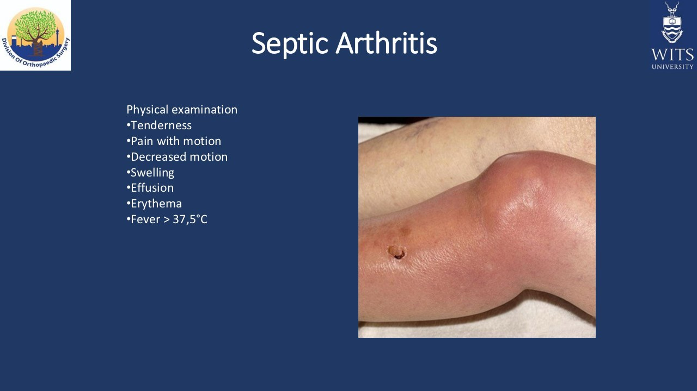
FIGURE | Clinical septic arthritis teaching image (study guide, p.233).
Bone Tumour — Osteosarcoma
MSK | CONDITION 10 OF 10 | STUDY GUIDE p.234
| CLINICAL STEM A teenager has progressive night-time pain and a hard swelling near the distal femur; X-ray shows an aggressive lesion. |
|---|
MECHANISM | WHY THE CLINICAL FEATURES OCCUR
Osteosarcoma is a primary malignant mesenchymal tumour that directly produces osteoid. It arises classically in metaphyses of growing long bones around the knee. It may spread haematogenously, especially to lungs.
RECOGNISE & DISCRIMINATE
|
INVESTIGATIONS & RESULTS
|
|---|
SAFE INITIAL ACTIONS | DRUGS AND THERAPY
• Do not perform an unplanned local biopsy or excision; biopsy tract must be planned by specialist sarcoma team.
• Treatment uses chemotherapy with limb-salvage surgery where feasible; supportive pain and psychosocial care.
EXAM PEARLS & BUZZWORDS
|
|---|
VSAQ PROMPT What matrix must osteosarcoma malignant cells produce? Answer: Osteoid
EXAM TRAP Persistent unexplained bone pain is not always a sports injury, particularly with mass or night pain.
PART IV — CANCER & HAEMATOLOGY
9 examinable conditions
Every following condition follows: clinical stem → why it happens → discriminate → tests → safest steps → exam pearls. The section labels are organisational and do not imply marks weighting.
Breast Cancer
CANCER & HAEM | CONDITION 1 OF 9 | STUDY GUIDE p.250
| CLINICAL STEM A 55-year-old has a painless irregular hard breast lump with skin tethering; another has nipple eczema, spontaneous bloody discharge or axillary nodes. |
|---|
MECHANISM | WHY THE CLINICAL FEATURES OCCUR
Most breast cancers are epithelial malignancies arising from the terminal duct-lobular unit. Invasive carcinoma breaches the basement membrane, permitting lymphatic and haematogenous spread. Receptor status (ER, PR, HER2) predicts biological behaviour and targeted therapy.
RECOGNISE & DISCRIMINATE
|
INVESTIGATIONS & RESULTS
|
|---|
SAFE INITIAL ACTIONS | DRUGS AND THERAPY
• Urgent referral for suspicious mass; surgery, systemic endocrine/anti-HER2/chemotherapy and radiotherapy depend on stage and subtype.
• Patient-centred communication, shared decisions, genetic counselling for selected families and access to care are examinable themes.
EXAM PEARLS & BUZZWORDS
|
|---|
VSAQ PROMPT What are the three parts of breast triple assessment? Answer: Exam, imaging, biopsy
EXAM TRAP A painless lump may still be cancer; a normal mammogram alone does not overrule a strongly suspicious examination.
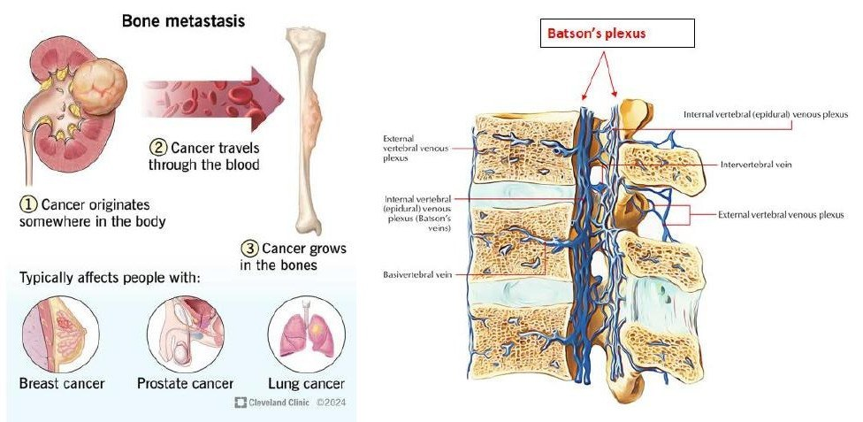
FIGURE | Breast anatomy and cancer spread pathways (study guide, p.251).
Cervical Cancer
CANCER & HAEM | CONDITION 2 OF 9 | STUDY GUIDE p.253
| CLINICAL STEM A patient with inadequate cervical screening presents with postcoital bleeding, intermenstrual bleeding or persistent offensive discharge. |
|---|
MECHANISM | WHY THE CLINICAL FEATURES OCCUR
Persistent high-risk human papillomavirus (HPV), especially types 16 and 18, can integrate into cervical epithelial cells. Viral E6 promotes p53 degradation and E7 inactivates retinoblastoma protein (Rb), undermining cell-cycle checkpoints and promoting squamous dysplasia/cancer.
RECOGNISE & DISCRIMINATE
|
INVESTIGATIONS & RESULTS
|
|---|
SAFE INITIAL ACTIONS | DRUGS AND THERAPY
• HPV vaccination and equitable screening prevent disease; avoid confusing prevention with treatment of an established cancer.
• Early recognition, compassionate sexual health communication, confidentiality and referral for oncological management.
EXAM PEARLS & BUZZWORDS
|
|---|
VSAQ PROMPT Which HPV protein degrades p53? Answer: E6
EXAM TRAP A normal prior smear does not exclude cancer in a patient with a suspicious visible lesion.
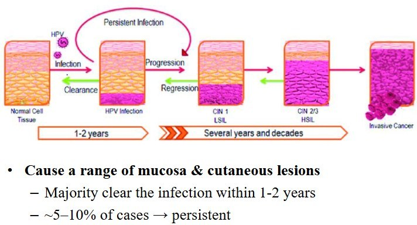
FIGURE | HPV-related progression through cervical neoplasia (study guide, p.254).
Prostate Cancer
CANCER & HAEM | CONDITION 3 OF 9 | STUDY GUIDE p.256
| CLINICAL STEM An older man with urinary symptoms or back pain has a hard irregular prostate on DRE and a raised PSA. |
|---|
MECHANISM | WHY THE CLINICAL FEATURES OCCUR
Most prostate cancers are adenocarcinomas, usually arising peripherally, and can metastasise to axial bone with osteoblastic/sclerotic lesions. Growth may depend on androgen-receptor signalling.
RECOGNISE & DISCRIMINATE
|
INVESTIGATIONS & RESULTS
|
|---|
SAFE INITIAL ACTIONS | DRUGS AND THERAPY
• Urgent referral for suspicious DRE/PSA pattern or metastatic symptoms; stage-appropriate surgery, radiotherapy, androgen deprivation or other therapy.
• New back pain + weakness + urinary retention = suspected metastatic spinal cord compression, an emergency.
EXAM PEARLS & BUZZWORDS
|
|---|
VSAQ PROMPT What is the typical bone-metastasis pattern of prostate cancer? Answer: Osteoblastic
EXAM TRAP Elevated PSA alone does not establish prostate cancer.
Iron-Deficiency Anaemia
CANCER & HAEM | CONDITION 4 OF 9 | STUDY GUIDE p.259
| CLINICAL STEM A tired adult man has pallor, Hb 7.8 g/dL, MCV 67 fL, low ferritin and no apparent external blood loss. |
|---|
MECHANISM | WHY THE CLINICAL FEATURES OCCUR
Inadequate iron impairs haem synthesis, making erythrocytes microcytic and hypochromic. Hepcidin limits ferroportin-mediated absorption/release during inflammation, explaining anaemia of chronic disease. Iron deficiency is often caused by chronic blood loss, pregnancy or inadequate dietary intake.
RECOGNISE & DISCRIMINATE
|
INVESTIGATIONS & RESULTS
|
|---|
SAFE INITIAL ACTIONS | DRUGS AND THERAPY
• Treat iron deficiency with appropriate oral/IV iron and treat its cause; nutrition and adherence support.
• Urgent assessment if haemodynamically unstable or severe symptomatic anaemia; investigate red-flag GI bleeding.
EXAM PEARLS & BUZZWORDS
|
|---|
VSAQ PROMPT Which iron-storage marker is usually reduced first? Answer: Ferritin
EXAM TRAP Never stop after prescribing iron in an older patient without evaluating the cause of blood loss.
FIGURE | Iron studies/clinical features comparison (study guide, p.260).
Thalassaemia
CANCER & HAEM | CONDITION 5 OF 9 | STUDY GUIDE p.262
| CLINICAL STEM A young patient has longstanding marked microcytosis disproportionate to mild anaemia, normal iron stores and a family history of similar findings. |
|---|
MECHANISM | WHY THE CLINICAL FEATURES OCCUR
Inherited reduction in alpha- or beta-globin chain synthesis leads to globin-chain imbalance, ineffective erythropoiesis and variable haemolysis. Beta-thalassaemia major may require repeated transfusions, causing secondary iron overload.
RECOGNISE & DISCRIMINATE
|
INVESTIGATIONS & RESULTS
|
|---|
SAFE INITIAL ACTIONS | DRUGS AND THERAPY
• Trait: counselling and avoid unnecessary iron.
• Severe transfusion-dependent disease requires specialist transfusions, iron chelation and long-term organ monitoring.
EXAM PEARLS & BUZZWORDS
|
|---|
VSAQ PROMPT Which Hb fraction is commonly increased in beta-thalassaemia trait? Answer: HbA2
EXAM TRAP Do not prescribe iron solely because MCV is low: confirm deficiency.
Aplastic Anaemia
CANCER & HAEM | CONDITION 6 OF 9 | STUDY GUIDE p.264
| CLINICAL STEM A young adult has repeated infections, spontaneous bruises and severe fatigue; blood tests show pancytopenia with low reticulocytes. |
|---|
MECHANISM | WHY THE CLINICAL FEATURES OCCUR
Haematopoietic stem-cell failure results in hypocellular fatty marrow and loss of production of red cells, white cells and platelets. Causes may be acquired immune-mediated, drug/toxin-related, viral or inherited.
RECOGNISE & DISCRIMINATE
|
INVESTIGATIONS & RESULTS
|
|---|
SAFE INITIAL ACTIONS | DRUGS AND THERAPY
• Febrile neutropenia is an emergency requiring urgent antibiotics; bleeding may need blood-product support.
• Definitive therapy may be stem-cell transplantation or immunosuppression under haematology care.
EXAM PEARLS & BUZZWORDS
|
|---|
VSAQ PROMPT What is the characteristic marrow finding in aplastic anaemia? Answer: Hypocellular marrow
EXAM TRAP Do not assume all pancytopenia is leukaemia: inspect smear and reticulocytes.
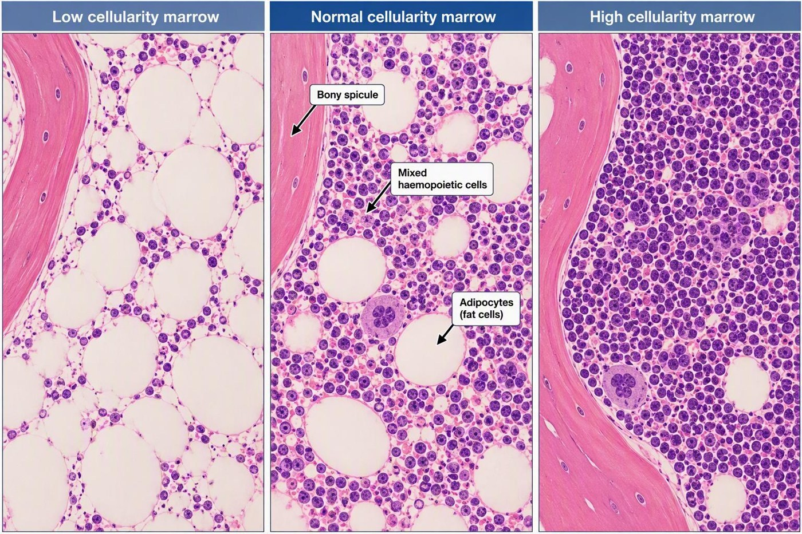
FIGURE | Marrow cellularity comparison from integrated study guide (p.265).
Haemophilia
CANCER & HAEM | CONDITION 7 OF 9 | STUDY GUIDE p.267
| CLINICAL STEM A boy has recurrent painful swollen knees after minor trauma, with normal platelet count and prolonged aPTT. |
|---|
MECHANISM | WHY THE CLINICAL FEATURES OCCUR
Inherited X-linked intrinsic-pathway factor deficiency: haemophilia A = factor VIII; B = factor IX. Impaired secondary haemostasis leads to deep tissue bleeding and haemarthrosis rather than isolated superficial mucosal bleeding.
RECOGNISE & DISCRIMINATE
|
INVESTIGATIONS & RESULTS
|
|---|
SAFE INITIAL ACTIONS | DRUGS AND THERAPY
• Give appropriate missing factor replacement for significant bleeding; specialist care for prophylaxis and inhibitors.
• Avoid intramuscular injections and NSAIDs where possible, plan procedures carefully and educate family.
EXAM PEARLS & BUZZWORDS
|
|---|
VSAQ PROMPT Which factor is deficient in haemophilia A? Answer: Factor VIII
EXAM TRAP Mucosal bleeding/petechiae with normal joint bleeding pattern points more towards platelets/vWD.
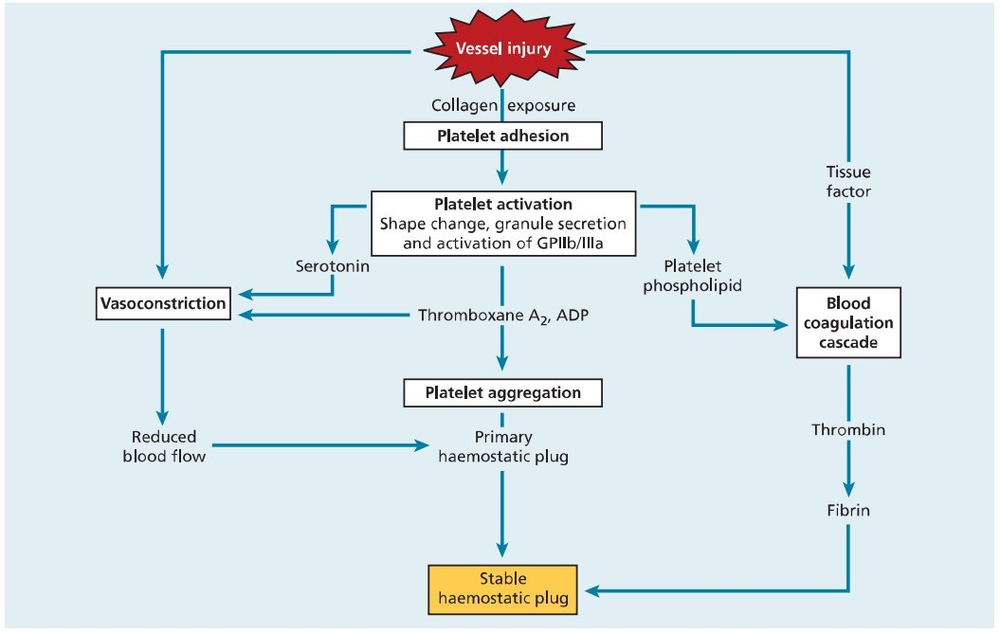
FIGURE | Coagulation cascade and bleeding-test interpretation (study guide, p.268).
von Willebrand Disease (vWD)
CANCER & HAEM | CONDITION 8 OF 9 | STUDY GUIDE p.270
| CLINICAL STEM A teenage girl has lifelong epistaxis, heavy menstrual bleeding and prolonged bleeding after dental extraction. |
|---|
MECHANISM | WHY THE CLINICAL FEATURES OCCUR
von Willebrand factor mediates platelet adhesion to damaged subendothelium through GPIb and carries/stabilises factor VIII. Deficiency or dysfunction impairs primary haemostasis and may prolong aPTT if factor VIII falls.
RECOGNISE & DISCRIMINATE
|
INVESTIGATIONS & RESULTS
|
|---|
SAFE INITIAL ACTIONS | DRUGS AND THERAPY
• Desmopressin releases endothelial vWF in selected responsive types; vWF-containing concentrates for more severe conditions.
• Avoid unplanned aspirin/NSAID exposure and provide perioperative precautions.
EXAM PEARLS & BUZZWORDS
|
|---|
VSAQ PROMPT Which platelet receptor binds vWF? Answer: GPIb
EXAM TRAP Normal aPTT does not rule out von Willebrand disease.
Disseminated Intravascular Coagulation (DIC)
CANCER & HAEM | CONDITION 9 OF 9 | STUDY GUIDE p.272
| CLINICAL STEM A patient with sepsis or placental abruption bleeds from IV sites while developing organ dysfunction; platelets and fibrinogen are low. |
|---|
MECHANISM | WHY THE CLINICAL FEATURES OCCUR
Systemic activation of coagulation produces microvascular fibrin thrombi and consumption of platelets/clotting factors. Secondary fibrinolysis increases D-dimer. Both thrombosis (organ ischaemia) and bleeding can occur simultaneously; DIC is always secondary to another illness.
RECOGNISE & DISCRIMINATE
|
INVESTIGATIONS & RESULTS
|
|---|
SAFE INITIAL ACTIONS | DRUGS AND THERAPY
• Treat underlying trigger urgently; manage sepsis/obstetric catastrophe or malignancy.
• Blood products (platelets, fresh frozen plasma, cryoprecipitate) selected for bleeding or procedures under clinical protocol.
EXAM PEARLS & BUZZWORDS
|
|---|
VSAQ PROMPT What fibrin-degradation marker typically rises in DIC? Answer: D-dimer
EXAM TRAP DIC is a syndrome, not a primary disease: always identify and treat the trigger.
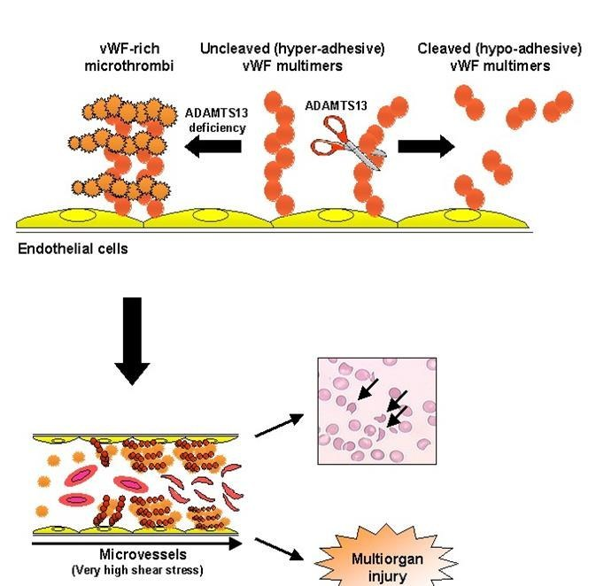
FIGURE | Pathophysiological cascade in DIC (integrated study guide, p.273).
COMPARISONS | Classic exam discriminators
Renal
| Presentation / clue | Most likely mechanism |
|---|---|
| Low urine output after dehydration; low BP | Pre-renal AKI |
| Muddy-brown casts after sepsis/nephrotoxin | Acute tubular injury |
| Cola urine + RBC casts + hypertension | Nephritic glomerulonephritis |
| Heavy protein loss + oedema + low albumin | Nephrotic syndrome |
| Flank-to-groin colic, haematuria | Ureteric stone |
| Months of eGFR decline, small kidneys, anaemia | CKD |
GI pain and stool
| Pattern | Think / next discriminating clue |
|---|---|
| Early post-meal RUQ pain that resolves | Biliary colic, no fever |
| Persistent RUQ pain, fever, Murphy sign | Acute cholecystitis |
| RUQ pain + jaundice + rigors | Ascending cholangitis |
| Epigastric pain radiating back | Pancreatitis: lipase |
| Haematemesis or melaena | UGIB: haemodynamic status first |
| Bloody diarrhoea + tenesmus | Shigella / inflammatory colitis |
| Chronic blood + continuous rectal disease | Ulcerative colitis |
| Frothy malodorous floating stools | Malabsorption / Giardia |
| Older adult + iron deficiency | Colorectal blood loss until investigated |
The acutely painful joint
| Feature | Likely cause |
|---|---|
| Red hot single joint with fever | Septic arthritis until excluded |
| Great toe, crystal needles, negative birefringence | Gout |
| Symmetrical MCP/PIP + prolonged stiffness | Rheumatoid arthritis |
| Older patient, brief morning stiffness, osteophytes | Osteoarthritis |
Bleeding and microcytosis
| Feature | Think |
|---|---|
| Mucosal bleeding, often normal aPTT | vWD / primary haemostasis |
| Recurrent haemarthrosis, prolonged aPTT | Haemophilia |
| Oozing + low fibrinogen + ↑PT/aPTT | DIC |
| Low MCV + low ferritin + ↑TIBC | Iron deficiency |
| Very low MCV + normal ferritin + high RBC count | Thalassaemia trait |
DRUGS & MECHANISMS | Paper 2 high-yield
Memorise class, target, first-line context and one important caution. Exact dosages are outside the official exit-level requirement.
| Drug/class | Mechanism → common setting / caution |
|---|---|
| ACE inhibitors / ARBs | Reduce intraglomerular pressure; albuminuric CKD/HTN; can increase K+ and worsen AKI in hypovolaemia |
| Loop diuretic: furosemide | Inhibits NKCC2 in thick ascending loop; oedema/volume overload; K+ loss |
| Spironolactone | Aldosterone receptor antagonist; cirrhotic ascites; hyperkalaemia |
| Macrogol / lactulose | Osmotic laxatives; lactulose also treats hepatic encephalopathy |
| PPIs: omeprazole | Irreversibly inhibits parietal H+/K+-ATPase; GORD/PUD/selected UGIB |
| Mesalazine (5-ASA) | Mucosal anti-inflammatory for mild/moderate ulcerative colitis |
| Metronidazole / tinidazole | Nitroimidazole therapy for Giardia in selected protocols |
| Co-amoxiclav / ceftriaxone | Beta-lactam cell-wall synthesis inhibition in selected bacterial illnesses, tailored to local advice |
| Allopurinol | Inhibits xanthine oxidase; long-term urate-lowering in gout |
| Colchicine | Inhibits microtubule polymerisation / neutrophil response in acute gout |
| NSAIDs | COX inhibition; pain/inflammation, but AKI/PUD/GI bleed risk |
| Methotrexate | Antifolate DMARD in RA; monitoring and folic-acid support |
| Bisphosphonates | Suppress osteoclast bone resorption in osteoporosis |
| Desmopressin | Stimulates endothelial vWF release in selected vWD types |
| Factor VIII / IX concentrates | Replace clotting factor in haemophilia A / B |
| Tamoxifen / aromatase inhibitor | Endocrine therapy for selected ER-positive breast cancer |
| Trastuzumab | Monoclonal antibody targets HER2-positive breast cancer |
| Androgen deprivation | Reduces androgen signalling for selected prostate cancers |
| IV calcium for severe hyperkalaemia | Stabilises myocardium; does not remove potassium |
| IV antibiotics for sepsis/septic arthritis | Early pathogen-directed therapy; obtain cultures when possible without delay |
11 VERTICAL THEMES | Clinical scenarios
These themes are explicitly listed in the official GEMP1 Core Presentations document (pp.3–4). They can be examined inside renal, GIT, MSK or cancer patient clusters.
| Theme | How it could appear in a cluster |
|---|---|
| Biomedical sciences | Explain why hypoalbuminaemia causes oedema or why DIC causes bleeding and thrombosis. |
| Clinical practice | Take a focused dehydration, rectal bleeding or acute swollen-joint history. |
| Diagnostics and therapy | Select the first sensible test (urine dip, stool exam, ultrasound, aspiration, biopsy). |
| Research/evidence-based practice | Interpret sensitivity/specificity; explain why one positive screening test is not a final diagnosis. |
| Technology, AI and digital health | Protect patient confidentiality and critically review decision-support outputs. |
| Population/public health | HPV vaccination, safe water, child malnutrition prevention, cancer screening. |
| Health systems science | Refer urgent suspected cancer equitably; identify cost and geographic barriers. |
| Professionalism, ethics and law | Autonomy/informed consent for procedures; confidentiality with cancer/HIV results. |
| Communication and teamwork | Use closed-loop handover for bleeding, sepsis or suspected spinal compression. |
| Patient-centred care | Shared choices, language access, goals of care and cultural food preferences. |
| Student wellness/resilience | Recognise fatigue and unsafe working; ask for help and hand over safely. |
Ethical principles in one line
• Autonomy: respect informed patient choices and capacity.
• Beneficence: act to benefit the patient.
• Non-maleficence: minimise avoidable harm (e.g. nephrotoxic drug in AKI).
• Justice: fair access and prioritisation based on clinical need; not personal wealth or status.
• Confidentiality: share sensitive findings only for appropriate care or lawful necessity.
42 VERY SHORT ANSWER QUESTIONS
Cover the answers at the back. These questions are constructed practice, not official past-paper questions. Every answer is designed to be 1–3 words where possible.
PART I — RENAL
Q01. What urinary cast strongly suggests acute tubular injury?
Q02. Which hormone deficiency causes CKD anaemia?
Q03. Which cast is characteristic of glomerular haematuria?
Q04. What is the adult nephrotic proteinuria threshold?
Q05. What bacteria classically form struvite stones?
PART II — GASTROINTESTINAL
Q06. What bedside measure screens for acute malnutrition?
Q07. Which transporter makes ORS effective?
Q08. What mechanism explains lactose-induced diarrhoea?
Q09. Which organism classically causes fried-rice emetic illness?
Q10. Which ribosomal subunit is blocked by Shiga toxin?
Q11. What is the infective stage of Giardia?
Q12. Which receptor mediates opioid-related constipation?
Q13. Which framework is used to diagnose IBS?
Q14. Which pump is inhibited by proton-pump inhibitors?
Q15. Which bacterial enzyme helps H. pylori survive acid?
Q16. Where is the anatomical boundary for UGIB?
Q17. What inflammatory bowel disease has continuous rectal involvement?
Q18. Which investigation confirms colorectal cancer?
Q19. What duct is transiently obstructed in biliary colic?
Q20. What bedside sign suggests gallbladder inflammation?
Q21. Which enzyme is preferred to support pancreatitis diagnosis?
Q22. What cell type drives collagen deposition in cirrhosis?
Q23. What ascitic neutrophil count diagnoses SBP?
PART III — MUSCULOSKELETAL
Q24. What is the earliest key compartment-syndrome symptom?
Q25. Which bedside test is most associated with ACL rupture?
Q26. What type of shock follows loss of sympathetic cord outflow?
Q27. What cell is inhibited by bisphosphonates?
Q28. Which vitamin D test assesses body stores?
Q29. What radiographic spur is typical of osteoarthritis?
Q30. What tissue destroys cartilage and bone in RA?
Q31. Which inflammasome pathway mediates urate inflammation?
Q32. What is the key initial diagnostic procedure?
Q33. What matrix must osteosarcoma malignant cells produce?
PART IV — CANCER & HAEMATOLOGY
Q34. What are the three parts of breast triple assessment?
Q35. Which HPV protein degrades p53?
Q36. What is the typical bone-metastasis pattern of prostate cancer?
Q37. Which iron-storage marker is usually reduced first?
Q38. Which Hb fraction is commonly increased in beta-thalassaemia trait?
Q39. What is the characteristic marrow finding in aplastic anaemia?
Q40. Which factor is deficient in haemophilia A?
Q41. Which platelet receptor binds vWF?
Q42. What fibrin-degradation marker typically rises in DIC?
VSAQ ANSWER KEY
PART I — RENAL
01. Granular cast — Acute Kidney Injury (AKI)
02. Erythropoietin — Chronic Kidney Disease (CKD)
03. RBC cast — Nephritic Syndrome
04. >3.5 g/day — Nephrotic Syndrome
05. Proteus mirabilis — Renal Calculi (Urolithiasis)
PART II — GASTROINTESTINAL
06. MUAC — Severe Acute Malnutrition (SAM)
07. SGLT1 — Acute Gastroenteritis
08. Osmotic diarrhoea — Diarrhoea — Clinical Approach
09. Bacillus cereus — Food Poisoning
10. 60S — Shigellosis (Bacillary Dysentery)
11. Cyst — Giardiasis
12. Mu-opioid receptor — Constipation
13. Rome IV — Irritable Bowel Syndrome (IBS)
14. H+/K+-ATPase — Gastro-Oesophageal Reflux Disease (GORD)
15. Urease — Peptic Ulcer Disease (PUD)
16. Ligament of Treitz — Upper Gastrointestinal Bleed (UGIB)
17. Ulcerative colitis — Ulcerative Colitis (UC)
18. Colonoscopy biopsy — Colorectal Cancer (CRC)
19. Cystic duct — Gallstones and Biliary Colic
20. Murphy sign — Acute Cholecystitis
21. Lipase — Acute Pancreatitis
22. Hepatic stellate cells — Liver Cirrhosis
23. ≥250 cells/µL — Ascites
PART III — MUSCULOSKELETAL
24. Disproportionate pain — Closed Long-Bone Fractures
25. Lachman test — Anterior Cruciate Ligament (ACL) Injury
26. Neurogenic shock — Spinal Cord Injury
27. Osteoclast — Osteoporosis
28. 25-OH vitamin D — Vitamin D Deficiency (Rickets/Osteomalacia)
29. Osteophyte — Osteoarthritis (OA)
30. Pannus — Rheumatoid Arthritis (RA)
31. NLRP3 — Gout
32. Joint aspiration — Septic Arthritis
33. Osteoid — Bone Tumour — Osteosarcoma
PART IV — CANCER & HAEMATOLOGY
34. Exam, imaging, biopsy — Breast Cancer
35. E6 — Cervical Cancer
36. Osteoblastic — Prostate Cancer
37. Ferritin — Iron-Deficiency Anaemia
38. HbA2 — Thalassaemia
39. Hypocellular marrow — Aplastic Anaemia
40. Factor VIII — Haemophilia
41. GPIb — von Willebrand Disease (vWD)
42. D-dimer — Disseminated Intravascular Coagulation (DIC)
FOUR WITS-STYLE PRACTICE CLUSTERS
Each original cluster contains five balanced four-option SBAs, a data interpretation prompt and two 1–3-word VSAQs. Answers are deliberately placed after all four clusters.
CLUSTER A — Oliguria and dangerous potassium
A 71-year-old with type 2 diabetes, CKD and recent gastroenteritis takes an ACE inhibitor, a diuretic and ibuprofen. He is dizzy, producing little urine and has potassium 6.9 mmol/L, bicarbonate 15 mmol/L and a wide QRS on ECG.
1. The most immediately dangerous abnormality is:
• A. Raised blood urea
• B. Hyperkalaemia
• C. Mild acidosis
• D. Reduced eGFR
2. The key drug combination causing AKI is:
• A. Statin plus PPI
• B. Iron plus folate
• C. NSAID, ACEi, diuretic
• D. Insulin plus metformin
3. The first emergency pharmacological action for ECG changes is:
• A. IV calcium
• B. Oral potassium binder
• C. Oral bicarbonate
• D. Furosemide alone
4. The most likely initial AKI category is:
• A. Pre-renal
• B. Post-renal
• C. Glomerular
• D. Congenital
5. If AKI persists despite volume correction, granular casts suggest:
• A. Minimal change
• B. Interstitial fibrosis
• C. Acute tubular injury
• D. IgA vasculitis
DATA INTERPRETATION: Data: creatinine was 108 µmol/L last week and is now 260 µmol/L. Is this an AKI by creatinine criteria?
VSAQ: What is the classic three-drug AKI combination called?
VSAQ: What drug class blocks angiotensin II formation?
CLUSTER B — Bloody diarrhoea with renal complications
A 4-year-old develops fever, abdominal cramps and bloody stools after a daycare outbreak. Five days later she is pale, oliguric and has Hb 7.5 g/dL, platelets 48 × 10⁹/L, schistocytes and increased creatinine.
1. The stool syndrome is best described as:
• A. Osmotic diarrhoea
• B. Steatorrhoea
• C. Dysentery
• D. Functional diarrhoea
2. The blood film suggests:
• A. Iron deficiency
• B. Microangiopathic haemolysis
• C. Beta-thalassaemia trait
• D. Aplastic anaemia
3. The triad strongly suggests:
• A. HUS
• B. IBS
• C. PUD
• D. GORD
4. Shiga toxin inhibits which structure?
• A. 30S ribosome
• B. RNA polymerase
• C. DNA gyrase
• D. 60S ribosome
5. The safest next step is:
• A. Routine loperamide
• B. Urgent admission
• C. Defer testing
• D. High-fibre diet
DATA INTERPRETATION: Data: haemoglobin 7.5 g/dL, platelets 48 × 10⁹/L, schistocytes and creatinine 180 µmol/L: identify the syndrome.
VSAQ: What blood-film feature indicates microangiopathic haemolysis?
VSAQ: Which bacterial toxin can precipitate HUS?
CLUSTER C — A hot swollen knee
A 64-year-old with diabetes presents with one day of severe hot swollen knee pain, fever 39 °C and extreme pain with passive movement. He has a history of gout and takes allopurinol.
1. The diagnosis not to miss is:
• A. Osteoarthritis
• B. Septic arthritis
• C. Chronic bursitis
• D. Osteoporosis
2. The key immediate diagnostic procedure is:
• A. DEXA
• B. Rheumatoid factor
• C. Joint aspiration
• D. Plain CT head
3. The common adult organism is:
• A. Staphylococcus aureus
• B. Giardia duodenalis
• C. HPV-16
• D. Plasmodium vivax
4. Finding crystals in fluid means:
• A. Infection excluded
• B. No antibiotics ever
• C. Only OA possible
• D. Infection still possible
5. Which underlying tissue is rapidly threatened?
• A. Articular cartilage
• B. Epidermis only
• C. Sclera
• D. Renal tubule
DATA INTERPRETATION: Data: synovial fluid contains abundant neutrophils and Gram-positive cocci; what is the most likely diagnosis?
VSAQ: Which gout crystals are needle-shaped and negatively birefringent?
VSAQ: Which procedure sends joint fluid for culture?
CLUSTER D — Bleeding and low fibrinogen
A 29-year-old with a severe obstetric haemorrhage is hypotensive and oozes from cannula sites. Platelets 32 × 10⁹/L, INR 2.4, aPTT prolonged, fibrinogen 0.6 g/L, D-dimer high.
1. The coagulation syndrome is:
• A. vWD type 1
• B. Haemophilia A
• C. DIC
• D. Thalassaemia
2. The mechanism of low fibrinogen is:
• A. Factor consumption
• B. Dietary deficiency
• C. Isolated platelet defect
• D. EPO deficiency
3. The raised D-dimer indicates:
• A. Iron absorption
• B. Fibrin breakdown
• C. Eosinophil activation
• D. EPO secretion
4. The most important treatment principle is:
• A. Avoid all blood tests
• B. Give oral iron only
• C. Stop all fluids
• D. Control the cause
5. A contrasting disorder with joint bleeding and isolated aPTT rise is:
• A. Haemophilia
• B. Iron deficiency
• C. HUS
• D. Giardiasis
DATA INTERPRETATION: Data: platelets low, fibrinogen low, PT/aPTT high, D-dimer high: name the pattern.
VSAQ: Which blood component replaces fibrinogen?
VSAQ: What is the main disease trigger in this case?
PRACTICE CLUSTER ANSWERS & REASONS
CLUSTER A — Oliguria and dangerous potassium
Q1: B. Wide QRS with K+ 6.9 signals imminent malignant arrhythmia.
Q2: C. Afferent and efferent glomerular effects combine with volume depletion.
Q3: A. IV calcium stabilises myocardium before potassium-shifting/removal steps.
Q4: A. Dehydration plus medications reduce renal perfusion and filtration.
Q5: C. Muddy-brown casts classically reflect tubular epithelial injury.
Data answer: Yes — >1.5× baseline within 7 days.
VSAQ: What is the classic three-drug AKI combination called? Triple whammy
VSAQ: What drug class blocks angiotensin II formation? ACE inhibitor
CLUSTER B — Bloody diarrhoea with renal complications
Q1: C. Blood and tenesmus indicate invasive colonic inflammation.
Q2: B. Schistocytes indicate RBC fragmentation in small vessels.
Q3: A. Anaemia + thrombocytopenia + acute kidney injury = HUS.
Q4: D. Shiga toxin damages cells through 60S ribosomal inhibition.
Q5: B. HUS with AKI requires urgent paediatric care.
Data answer: Haemolytic uraemic syndrome.
VSAQ: What blood-film feature indicates microangiopathic haemolysis? Schistocytes
VSAQ: Which bacterial toxin can precipitate HUS? Shiga toxin
CLUSTER C — A hot swollen knee
Q1: B. A hot febrile joint is septic until adequately excluded.
Q2: C. Aspirate for microbiology and crystals, without delaying urgent treatment if septic.
Q3: A. S. aureus is a leading cause of adult septic arthritis.
Q4: D. Crystals can coexist with infection.
Q5: A. Inflammatory and bacterial enzymes damage cartilage quickly.
Data answer: Septic arthritis.
VSAQ: Which gout crystals are needle-shaped and negatively birefringent? Monosodium urate
VSAQ: Which procedure sends joint fluid for culture? Joint aspiration
CLUSTER D — Bleeding and low fibrinogen
Q1: C. Consumption of platelets/factors plus fibrinolysis is classic DIC.
Q2: A. Uncontrolled thrombin activity consumes fibrinogen.
Q3: B. Plasmin breaks down cross-linked fibrin into products including D-dimer.
Q4: D. Underlying trigger treatment is essential along with blood-product support.
Q5: A. Factor VIII/IX deficiency prolongs intrinsic pathway aPTT.
Data answer: Consumptive coagulopathy (DIC).
VSAQ: Which blood component replaces fibrinogen? Cryoprecipitate
VSAQ: What is the main disease trigger in this case? Obstetric haemorrhage
SOURCE MAP & LIMITATIONS
• PRIMARY OFFICIAL: Integrated GEMP1 End-of-Year Integrated Assessment Student Information Guide, pp.1–4 (format, level, question structure, safety).
• PRIMARY OFFICIAL: Core Presentations list GEMP1, pp.3–7 (11 vertical themes and red-coded core conditions).
• USER-UPLOADED REVISION: Integrated Exam Study Guide — Mariam Baruffwala 2026, pp.123–285 for Paper 2 chapters, and pp.339–380 for its quick review illness scripts.
• USER-UPLOADED SUPPORTING NOTES: 4. Renal core notes.pdf; 5. GIT core notes.pdf; 9. MSK - core.pdf; Renal - Urinary.pdf; Gastrointestinal - Hepatobiliary.pdf; Musculoskeletal, Rheumatology - Orthopaedics.pdf; Reproductive, Obstetrics - Cancer.pdf; Thyroid, Parathyroid - Bone Metabolism.pdf.
• FIGURES: Reproduced from the user-provided Integrated Exam Study Guide; original guide page numbers are shown in captions. Some source figures are composites or lecture snapshots and should be interpreted with the accompanying text.
• This is a HIGH-YIELD SYNTHESIS, not a verbatim copy of every lecture. Original individual Wits lecture slides were not all separately opened and checked. No exact drug doses or independent specialist-level treatment instructions are intended.
• A syndrome may overlap multiple blocks (e.g. DIC, CRC, arthritis); this document follows the integrated study guide’s Paper 2 grouping. Every listed condition is marked red in the official GEMP1 scope document.